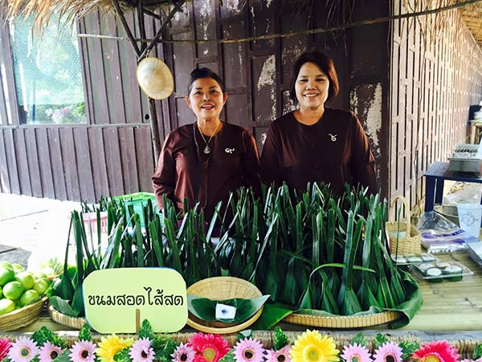
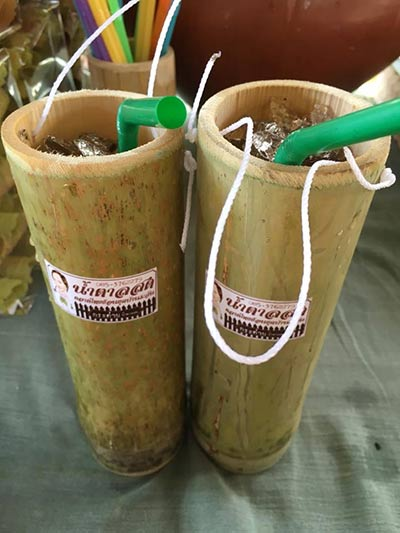
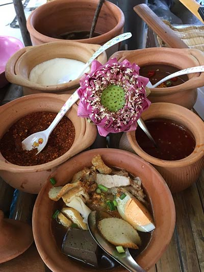

ความเป็นมา
เป็นที่ทราบกันดีค่ะว่าเมืองสิงห์บุรีนั้น เป็นเมืองที่มีประวัติศาสตร์อันเก่าแก่และทรงคุณค่า โดยเฉพาะที่วัดโพธิ์เก้าต้น ตำบลบางระจัน อำเภอค่ายบางระจัน ซึ่งเป็นพื้นที่ประวัติศาสตร์ของวีรกรรมชาวบางระจัน ลองนึกกันดูสิคะว่าถ้าได้ย้อนกลับไปในยุคนั้น เราจะไปเดินช้อปปิ้งซื้อของอะไรในตลาดดี หลายคนอาจจะนึกไม่ออก งั้นก็ไม่ต้องนึกค่ะ เราย้อนกลับไปเที่ยวชมกันเองเลยดีกว่า กับ ตลาดไทยย้อนยุคบ้านระจัน ที่เที่ยววันหยุดที่จะพาคุณไปชิลได้อย่างดีทีเดียว
สถานที่ตั้ง
ตลาดไทยย้อนยุคบ้านระจัน ตั้งอยู่ภายในวัดโพธิ์เก้าต้น ตำบลบางระจัน อำเภอค่ายบางระจัน จังหวัดสิงห์บุรี โดยวัดโพธิ์เก้าต้นเป็นวัดที่สำคัญ จะมีนักท่องเที่ยวแวะเวียนมาไหว้พระทำบุญไม่ขาดสาย และเพื่อให้นักท่องเที่ยวได้ท่องเที่ยวอย่างครบรส ทั้งไหว้พระทำบุญ กิน และช้อปปิ้ง อีกทั้งยังต้องการส่งเสริมรายได้ให้กับชาวบ้าน ทางชุมชนจึงได้มีการจัดตลาดไทยย้อนยุคบ้านระจันขึ้น
ตลาดจะเปิดให้เยี่ยมชม
เสาร์ อาทิตย์และวันหยุดขัตฤกษ์ที่ต่อเนื่องจากเสาร์ อาทิตย์ ตั้งแต่เวลา 09.00-16.30 น. ไม่มีค่าเข้าชม
ติดต่อ
091-7656566
อาหารแนะนำ |
|---|
ขนมสอดไส้สด |
น้ำตาลสด |
ก๋วยจั๋บ |